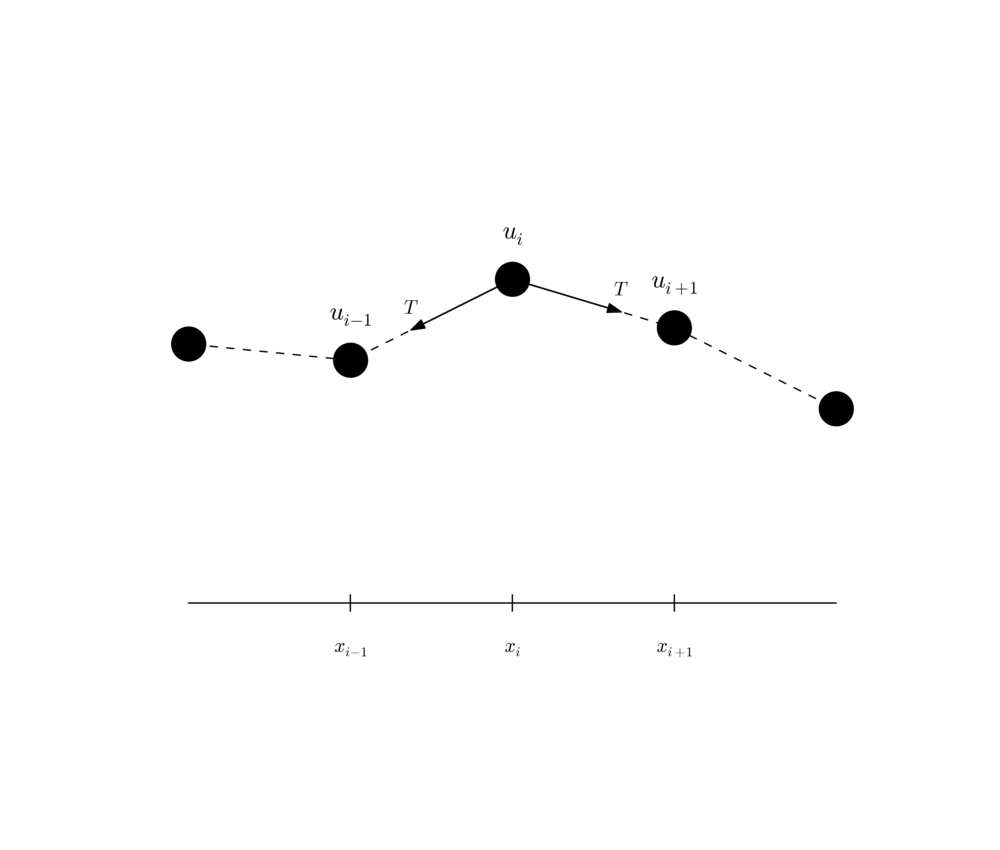

This section presents a range of wave equation models for different physical phenomena. Although many wave motion problems in physics can be modeled by the standard linear wave equation, or a similar formulation with a system of first-order equations, there are some exceptions. Perhaps the most important is water waves: these are modeled by the Laplace equation with time-dependent boundary conditions at the water surface (long water waves, however, can be approximated by a standard wave equation, see the section The linear shallow water equations). Quantum mechanical waves constitute another example where the waves are governed by the Schrodinger equation and not a standard wave equation. Many wave phenomena also need to take nonlinear effects into account when the wave amplitude is significant. Shock waves in the air is a primary example.
The derivations in the following are very brief. Those with a firm background in continuum mechanics will probably have enough information to fill in the details, while other readers will hopefully get some impression of the physics and approximations involved when establishing wave equation models.
Figure 9: Discrete string model with point masses connected by elastic strings.

Figure 9 shows a model we may use to derive the equation for waves on a string. The string is modeled as a set of discrete point masses (at mesh points) with elastic strings in between. The strings are at a high constant tension \( T \). We let the mass at mesh point \( x_i \) be \( m_i \). The displacement of this mass point in \( y \) direction is denoted by \( u_i(t) \).
The motion of mass \( m_i \) is governed by Newton's second law of motion. The position of the mass at time \( t \) is \( x_i\ii + u_i(t)\jj \), where \( \ii \) and \( \jj \) are unit vectors in the \( x \) and \( y \) direction, respectively. The acceleration is then \( u_i''(t)\jj \). Two forces are acting on the mass as indicated in Figure 9. The force \( \T^{-} \) acting toward the point \( x_{i-1} \) can be decomposed as $$ \T^{-} = -T\sin\phi\ii -T\cos\phi\jj, $$ where \( \phi \) is the angle between the force and the line \( x=x_i \). Let \( \Delta u_i = u_i - u_{i-1} \) and let \( \Delta s_i = \sqrt{\Delta u_i^2 + (x_i - x_{i-1})^2} \) be the distance from mass \( m_{i-1} \) to mass \( m_i \). It is seen that \( \cos\phi = \Delta u_i/\Delta s_i \) and \( \sin\phi = (x_{i}-x_{i-1})/\Delta s \) or \( \Delta x/\Delta s_i \) if we introduce a constant mesh spacing \( \Delta x = x_i - x_{i-1} \). The force can then be written $$ \T^{-} = -T\frac{\Delta x}{\Delta s_i}\ii - T\frac{\Delta u_i}{\Delta s_i}\jj \tp $$ The force \( \T^{+} \) acting toward \( x_{i+1} \) can be calculated in a similar way: $$ \T^{+} = T\frac{\Delta x}{\Delta s_{i+1}}\ii + T\frac{\Delta u_{i+1}}{\Delta s_{i+1}}\jj \tp $$ Newton's second law becomes $$ m_iu_i''(t)\jj = \T^{+} + \T^{-},$$ which gives the component equations $$ \begin{align} T\frac{\Delta x}{\Delta s_i} &= T\frac{\Delta x}{\Delta s_{i+1}}, \tag{69}\\ m_iu_i''(t) &= T\frac{\Delta u_{i+1}}{\Delta s_{i+1}} - T\frac{\Delta u_i}{\Delta s_i} \tag{70} \tp \end{align} $$
A basic reasonable assumption for a string is small displacements \( u_i \) and small displacement gradients \( \Delta u_i/\Delta x \). For small \( g=\Delta u_i/\Delta x \) we have that $$ \Delta s_i = \sqrt{\Delta u_i^2 + \Delta x^2} = \Delta x\sqrt{1 + g^2} + \Delta x (1 + {\half}g^2 + {\cal O}(g^4) \approx \Delta x \tp $$ Equation (69) is then simply the identity \( T=T \), while (70) can be written as $$ m_iu_i''(t) = T\frac{\Delta u_{i+1}}{\Delta x} - T\frac{\Delta u_i}{\Delta x}, $$ which upon division by \( \Delta x \) and introducing the density \( \varrho_i = m_i/\Delta x \) becomes $$ \begin{equation} \varrho_i u_i''(t) = T\frac{1}{\Delta x^2} \left( u_{i+1} - 2u_i + u_{i-1}\right) \tag{71} \tp \end{equation} $$ We can now choose to approximate \( u_i'' \) by a finite difference in time and get the discretized wave equation, $$ \begin{equation} \varrho_i \frac{1}{\Delta t^2} \left(u^{n+1}_i - 2u^n_i - u^{n-1}_i\right) = T\frac{1}{\Delta x^2} \left( u_{i+1} - 2u_i + u_{i-1}\right)\tp \end{equation} $$ On the other hand, we may go to the continuum limit \( \Delta x\rightarrow 0 \) and replace \( u_i(t) \) by \( u(x,t) \), \( \varrho_i \) by \( \varrho(x) \), and recognize that the right-hand side of (71) approaches \( \partial^2 u/\partial x^2 \) as \( \Delta x\rightarrow 0 \). We end up with the continuous model for waves on a string: $$ \begin{equation} \varrho\frac{\partial^2 u}{\partial t^2} = T\frac{\partial^2 u}{\partial x^2} \tag{72} \tp \end{equation} $$ Note that the density \( \varrho \) may change along the string, while the tension \( T \) is a constant. With variable wave velocity \( c(x) = \sqrt{T/\varrho(x)} \) we can write the wave equation in the more standard form $$ \begin{equation} \frac{\partial^2 u}{\partial t^2} = c^2(x)\frac{\partial^2 u}{\partial x^2} \tag{73} \tp \end{equation} $$ Because of the way \( \varrho \) enters the equations, the variable wave velocity does not appear inside the derivatives as in many other versions of the wave equation. However, most strings of interest have constant \( \varrho \).
The end point of a string are fixed so that the displacement \( u \) is zero. The boundary conditions are therefore \( u=0 \).
Air resistance and non-elastic effects in the string will contribute to reduce the amplitudes of the waves so that the motion dies out after some time. This damping effect can be modeled by a term \( bu_t \) on the left-hand side of the equation $$ \begin{equation} \varrho\frac{\partial^2 u}{\partial t^2} + b\frac{\partial u}{\partial t} = T\frac{\partial^2 u}{\partial x^2} \tag{74} \tp \end{equation} $$ The parameter \( b \) must normally be determined from physical experiments.
It is easy to include an external force acting on the string. Say we have a vertical force \( \tilde f_i\jj \) acting on mass \( m_i \). This force affects the vertical component of Newton's law and gives rise to an extra term \( \tilde f(x,t) \) on the right-hand side of (72). In the model (73) we would add a term \( f(x,t) = \tilde f(x,y)/\varrho(x) \).
We assumed, in the derivation above, that the tension in the string, \( T \), was constant. It is easy to check this assumption by modeling the string segments between the masses as standard springs, where the force (tension \( T \)) is proportional to the elongation of the spring segment. Let \( k \) be the spring constant, and set \( T_i=k\Delta \ell \) for the tension in the spring segment between \( x_{i-1} \) and \( x_i \), where \( \Delta\ell \) is the elongation of this segment from the tension-free state. A basic feature of a string is that it has high tension in the equilibrium position \( u=0 \). Let the string segment have an elongation \( \Delta\ell_0 \) in the equilibrium position. After deformation of the string, the elongation is \( \Delta \ell = \Delta \ell_0 + \Delta s_i \): \( T_i = k(\Delta \ell_0 + \Delta s_i)\approx k(\Delta \ell_0 + \Delta x) \). This shows that \( T_i \) is independent of \( i \). Moreover, the extra approximate elongation \( \Delta x \) is very small compared to \( \Delta\ell_0 \), so we may well set \( T_i = T = k\Delta\ell_0 \). This means that the tension is completely dominated by the initial tension determined by the tuning of the string. The additional deformations of the spring during the vibrations do not introduce significant changes in the tension.
Consider an elastic rod subject to a hammer impact at the end. This experiment will give rise to an elastic deformation pulse that travels through the rod. A mathematical model for longitudinal waves along an elastic rod starts with the general equation for deformations and stresses in an elastic medium, $$ \begin{equation} \varrho\u_{tt} = \nabla\cdot\stress + \varrho\f, \tag{75} \end{equation} $$ where \( \varrho \) is the density, \( \u \) the displacement field, \( \stress \) the stress tensor, and \( \f \) body forces. The latter has normally no impact on elastic waves.
For stationary deformation of an elastic rod, one has that \( \sigma_{xx} = Eu_x \), with all other stress components being zero. Moreover, \( \u = u(x)\ii \). The parameter \( E \) is known as Young's modulus. Assuming that this simple stress and deformation field, which is exact in the stationary case, is a good approximation in the transient case with wave motion, (75) simplifies to $$ \begin{equation} \varrho\frac{\partial^2 u}{\partial t^2} = \frac{\partial}{\partial x} \left( E\frac{\partial u}{\partial x}\right) \tag{76} \tp \end{equation} $$
The associated boundary conditions are \( u \) or \( \sigma_{xx}=Eu_x \) known, typically \( u=0 \) for a clamped end and \( \sigma_{xx}=0 \) for a free end.
Seismic waves are used to infer properties of subsurface geological structures. The physical model is a heterogeneous elastic medium where sound is propagated by small elastic vibrations. The general mathematical model for deformations in an elastic medium is based on Newton's second law, $$ \begin{equation} \varrho\u_{tt} = \nabla\cdot\stress + \varrho\f, \tag{77} \end{equation} $$ and a constitutive law relating \( \stress \) to \( \u \), often Hooke's generalized law, $$ \begin{equation} \stress = K\nabla\cdot\u\, \I + G(\nabla\u + (\nabla\u)^T - \frac{2}{3}\nabla\cdot\u\, \I) \tag{78} \tp \end{equation} $$ Here, \( \u \) is the displacement field, \( \stress \) is the stress tensor, \( \I \) is the identity tensor, \( \varrho \) is the medium's density, \( \f \) are body forces (such as gravity), \( K \) is the medium's bulk modulus and \( G \) is the shear modulus. All these quantities may vary in space, while \( \u \) and \( \stress \) will also show significant variation in time during wave motion.
The acoustic approximation to elastic waves arises from a basic assumption that the second term in Hooke's law, representing the deformations that give rise to shear stresses, can be neglected. This assumption can be interpreted as approximating the geological medium by a fluid. Neglecting also the body forces \( \f \), (77) becomes $$ \begin{equation} \varrho\u_{tt} = \nabla (K\nabla\cdot\u ) \tag{79} \end{equation} $$ Introducing \( p \) as a pressure via $$ \begin{equation} p=-K\nabla\cdot\u, \tag{80} \end{equation} $$ and dividing (79) by \( \varrho \), we get $$ \begin{equation} \u_{tt} = -\frac{1}{\varrho}\nabla p \tp \end{equation} $$ Taking the divergence of this equation, using \( \nabla\cdot\u = -p/K \) from (80), gives the acoustic approximation to elastic waves: $$ \begin{equation} p_{tt} = K\nabla\cdot\left(\frac{1}{\varrho}\nabla p\right) \tp \tag{83} \end{equation} $$ This is a standard, linear wave equation with variable coefficients. It is common to add a source term \( s(x,y,z,t) \) to model the generation of sound waves: $$ \begin{equation} p_{tt} = K\nabla\cdot\left(\frac{1}{\varrho}\nabla p\right) + s \tp \tag{82} \end{equation} $$
A common additional approximation of (82) is based on using the chain rule on the right-hand side, $$ K\nabla\cdot\left(\frac{1}{\varrho}\nabla p\right) = \frac{K}{\varrho}\nabla^2 p + K\nabla\left(\frac{1}{\varrho}\right)\cdot \nabla p \approx \frac{K}{\varrho}\nabla^2 p, $$ under the assumption that the relative spatial gradient \( \nabla\varrho^{-1} = -\varrho^{-2}\nabla\varrho \) is small. This approximation results in the simplified equation $$ \begin{equation} p_{tt} = \frac{K}{\varrho}\nabla^2 p + s \tp \tag{83} \end{equation} $$
The acoustic approximations to seismic waves are used for sound waves in the ground, and the Earth's surface is then a boundary where \( p \) equals the atmospheric pressure \( p_0 \) such that the boundary condition becomes \( p=p_0 \).
Quite often in geological materials, the effective wave velocity \( c=\sqrt{K/\varrho} \) is different in different spatial directions because geological layers are compacted such that the properties in the horizontal and vertical direction differ. With \( z \) as the vertical coordinate, we can introduce a vertical wave velocity \( c_z \) and a horizontal wave velocity \( c_h \), and generalize (83) to $$ \begin{equation} p_{tt} = c_z^2 p_{zz} + c_h^2 (p_{xx} + p_{yy}) + s \tp \tag{84} \end{equation} $$
Sound waves arise from pressure and density variations in fluids. The starting point of modeling sound waves is the basic equations for a compressible fluid where we omit viscous (frictional) forces, body forces (gravity, for instance), and temperature effects: $$ \begin{align} \varrho_t + \nabla\cdot (\varrho \u) &= 0, \tag{85}\\ \varrho \u_{t} + \varrho \u\cdot\nabla\u &= -\nabla p, \tag{86}\\ \varrho &= \varrho (p) \tp \tag{87} \end{align} $$ These equations are often referred to as the Euler equations for the motion of a fluid. The parameters involved are the density \( \varrho \), the velocity \( \u \), and the pressure \( p \). Equation (86) reflects mass balance, (85) is Newton's second law for a fluid, with frictional and body forces omitted, and (87) is a constitutive law relating density to pressure by thermodynamics considerations. A typical model for (87) is the so-called isentropic relation, valid for adiabatic processes where there is no heat transfer: $$ \begin{equation} \varrho = \varrho_0\left(\frac{p}{p_0}\right)^{1/\gamma} \tp \tag{88} \end{equation} $$ Here, \( p_0 \) and \( \varrho_0 \) are references values for \( p \) and \( \varrho \) when the fluid is at rest, and \( \gamma \) is the ratio of specific heat at constant pressure and constant volume (\( \gamma = 5/3 \) for air).
The key approximation in a mathematical model for sound waves is to assume that these waves are small perturbations to the density, pressure, and velocity. We therefore write $$ \begin{align*} p &= p_0 + \hat p,\\ \varrho &= \varrho_0 + \hat\varrho,\\ \u &= \hat\u, \end{align*} $$ where we have decomposed the fields in a constant equilibrium value, corresponding to \( \u=0 \), and a small perturbation marked with a hat symbol. By inserting these decompositions in (85) and (86), neglecting all product terms of small perturbations and/or their derivatives, and dropping the hat symbols, one gets the following linearized PDE system for the small perturbations in density, pressure, and velocity: $$ \begin{align} \varrho_t + \varrho_0\nabla\cdot\u &= 0,\\ \varrho_0\u_t &= -\nabla p \tp \end{align} $$ Now we can eliminate \( \varrho_t \) by differentiating the relation \( \varrho(p) \), $$ \varrho_t = \varrho_0 \frac{1}{\gamma}\left(\frac{p}{p_0}\right)^{1/\gamma-1} \frac{1}{p_0}p_t = \frac{\varrho_0}{\gamma p_0} \left(\frac{p}{p_0}\right)^{1/\gamma-1}p_t \tp $$ The product term \( p^{1/\gamma -1}p_t \) can be linearized as \( p_0^{1/\gamma -1}p_t \), resulting in $$ \varrho_t \approx \frac{\varrho_0}{\gamma p_0} p_t \tp $$ We then get $$ \begin{align} p_t + \gamma p_0\nabla\cdot\u &= 0, \tag{89}\\ \u_t &= -\frac{1}{\varrho_0}\nabla p, \tag{90} \tp \end{align} $$ Taking the divergence of (90) and differentiating (89) with respect to time gives the possibility to easily eliminate \( \nabla\cdot\u_t \) and arrive at a standard, linear wave equation for \( p \): $$ \begin{equation} p_{tt} = c^2\nabla^2 p, \end{equation} $$ where \( c = \sqrt{\gamma p_0/\varrho_0} \) is the speed of sound in the fluid.